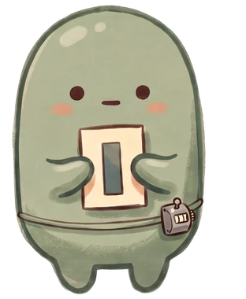

Rough words, tidied
From Noor and Mika · the rough journey
A website for a small bakery, so customers can order bread ahead.
ChooseOrderPick up
Morning regularsBrowse the loavesOrder aheadCollect at the counter
Weekend crowdBrowse pastriesOrder by FridayCollect Saturday
The bakersSee tomorrow’s ordersBake to the listHand over
In the meeting



NoorWhat do people come to a bakery like this for that they can’t get at the supermarket?
Priya
Click the part it’s about, then say your piece